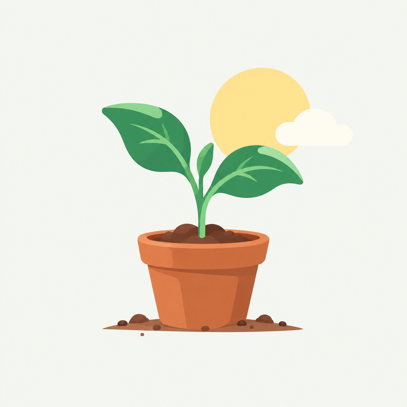

SiembraCo
C
Buenos días, Camila
Tu cultivo

Aún no tienes una siembra activa
La compra se hace en la plataforma SiembraCo. Cuando la confirmes, tu cultivo aparece aquí con su etapa, la fecha estimada de cosecha y los reportes de tu agricultor.
Comprar una siembra en co.siembraco.com ¿Cómo funciona una siembra virtual?